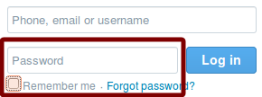

In a hurry? Quick Start
1. Authentication
1.1. Identification
1.2. Authentication
1.3. Authorisation
2. Methods of authentication
2.1. Text based passwords
2.2. Biometrics
2.2.1. Eye scan
2.2.2. Finger print scan
2.2.3. Face recognition
2.2.4. Voice recognition
2.3. Image based
2.3.1. Image selection
2.3.2. Point selection
2.4. Pattern based
2.4.1. Sketch based
2.4.2. Doodle based
2.5. Handwritting based
2.6. Two factor authentication
3. Factors of authentication
3.1. Guessability
3.2. Observability
3.3. Memorability
3.4. Recordability
Authentication in this context is the process by which a person proves who they are. It can be rather confusing as Authentication not only refers to the process as a whole but also to a particular stage of the process.
Identification is the stage of the authentication process where you claim to be someone. There are multiple examples of identification in our day-to-day lives. This includes being asked for I.D. such as a passport or driving license by someone. Identification also takes place on computer systems, we see it all the time when being asked for our login details. Everytime we supply a website with our username or E-mail address we are providing them with our identity. Below are some examples of websites asking for identification.
Authentication in this context is the stage of the process where the identity that you have provided is validated. When asked by a police officer or security guard to prouce an I.D. the authorisation stage of this exchange is when the I.D. is examined and either accepted or rejected. Validation on computer systems is most commonly characterised by password entry but there are multiple possible ways of doing this discussed below. The same examples seen above have been editted to bring emphasise to the authenticating element of the input.
Authorisation is the stage of deciding what you can access after you have claimed and proven your identity. This could be after you have given your I.D. to a security guard and he has verified it. The authorsation stage would be deciding which areas of a building you can or cannot access. On a computer system this translates to files and folders that you can or cannot access. Authorisation is usually referred too in levels. The highest access level is normally administrator level access where as the lowest is normally guest level.